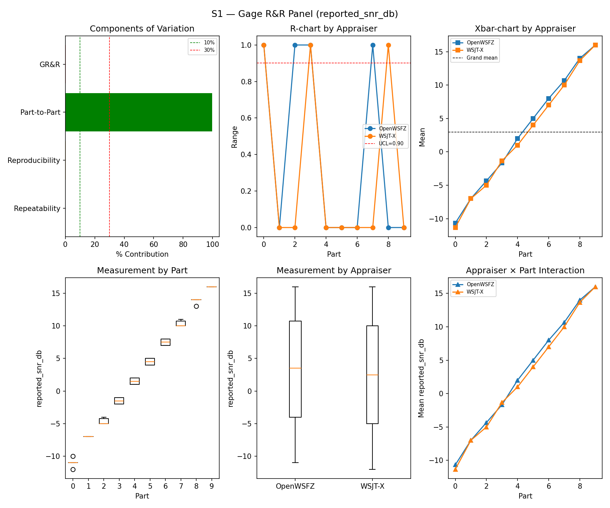
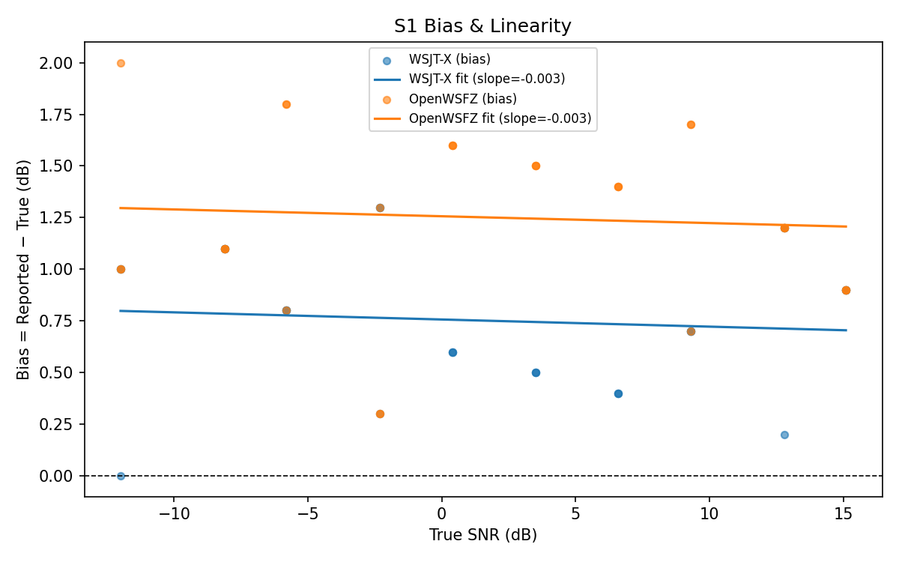
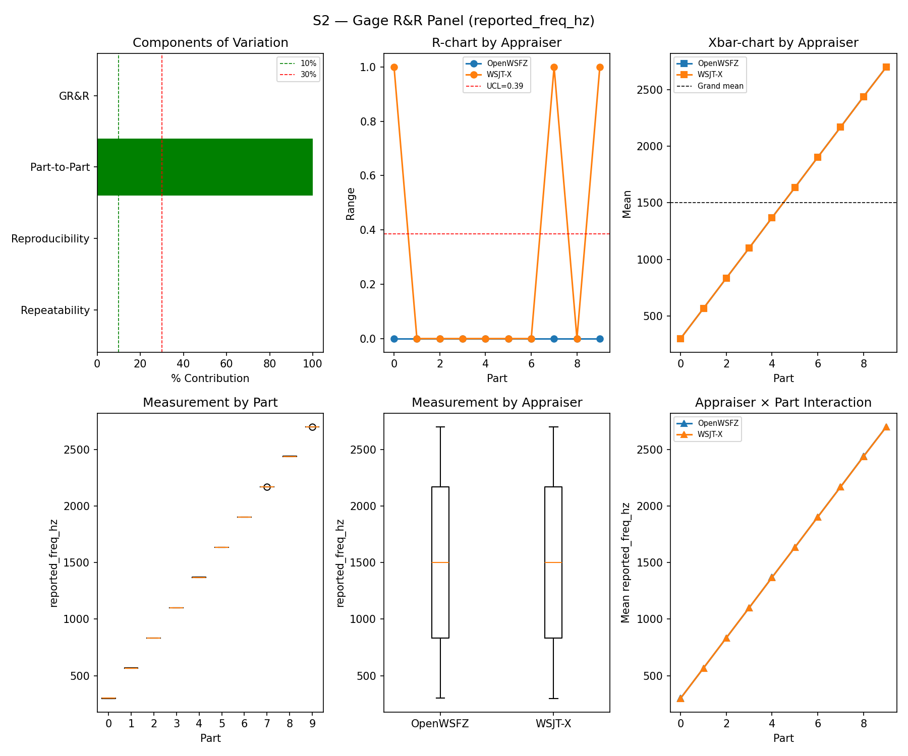
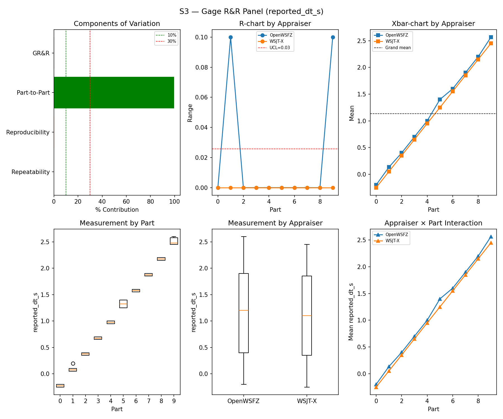
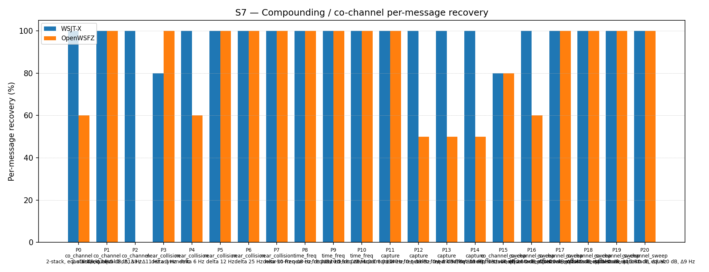
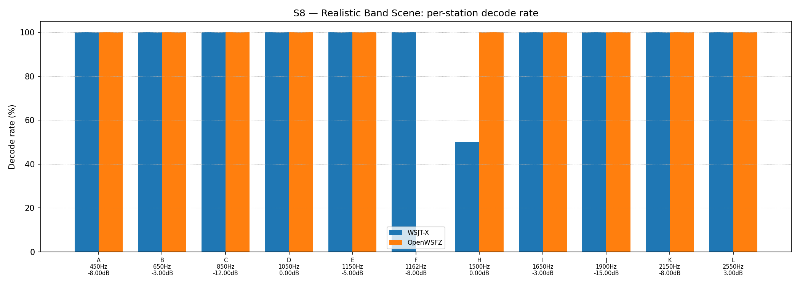

OpenWSFZ R&R Study Report
| Field | Value |
|---|---|
| Run date | 2026-08-22 |
| OpenWSFZ SHA | f5dec2339b9baa1dc33e14d5198ab4481cf288b1 — clean working tree, no uncommitted changes (verified: git status --short -- src/ empty) |
| Native DLL identity | src/OpenWSFZ.Ft8/Native/win-x64/libft8.dll SHA256 bc8efcf148046f199c057b62c7987c4b69f2dc62d72509458a671305ab051d7f — confirmed byte-identical across the committed blob, the working tree, and the copy actually loaded by the daemon process that produced this run (PID 408); shim 20260046 includes c3a9ea8 (negative time_offset SNR-collapse fix), confirmed on-branch ancestor of HEAD |
| WSJT-X version | WSJT-X 2.7.0 (inferred from binary date 2025-02-04) |
| Baseline compared against | 2026-08-21-7d36038 (results/2026-08-21-7d36038/report.md) — the last full S1–S8 sweep |
Section 1 — Study Hypothesis
Purpose
Status-check sweep, same convention as the last several full runs — not a regression test of a specific change. Two things happened earlier in this session worth recording for provenance, neither of which is a code-semantics change:
- Build-environment defect found and fixed. The daemon binary on disk at session start had been
compiled from WSL, which silently compiles out all WASAPI capture code (
OpenWSFZ.Audio'sWASAPI_SUPPORTEDconstant is gated on$([MSBuild]::IsOSPlatform('Windows')), evaluated at build time against the build machine's OS, not the target's). It was rebuilt from a native Windows shell this session —git statusconfirms zero source changes, so this is a build-artefact fix, not a behaviour change. Confirmed the daemon that ran this study is genuinely capturing (captureActive:true, live WASAPI tone-injection test PASS) rather than the earlier silent-stub state. - R&R-009 testing-strategy change landed mid-session, does not apply to this run.
run_study.pynow restricts S5 to parts 0/1 by default (parts 2/3 — steady-carrier and multi-carrier "birdie" cases — detected 1 of 53 false positives across all prior history). This run was already launched before that edit landed, so it ran the full, unrestricted S5 (all four parts, 120 slots) — directly comparable to every prior sweep with no sample-size caveat. See Section 5 for how this run's own S5 false positives distribute across parts, which independently corroborates R&R-009's rationale.
Null Hypotheses
- H₀-A (GR&R/ndc, S1–S3): %GR&R and ndc for S1/S2/S3 remain within STUDY-SPEC §10 thresholds,
consistent with
7d36038. Holds — see Section 5. - H₀-B (S5 false positives): The per-slot FP event rate (§10 gate, Clopper–Pearson 95% UB ≤ 6%)
does not regress from
7d36038. Rejected — OpenWSFZ's S5 FP event rate went from 1/120 (PASS, 95% UB 3.89%) to 4/120 (FAIL, 95% UB 7.47%). This is the study's second-ever ratified S5 gate failure (the first was 2026-06-20, a real OSD-noise regression later fixed by D-009). See Section 5 for per-part attribution. - H₀-C (S7/S8 co-channel recovery): Recovery is consistent with
7d36038— no new regression, allowing for ordinary seed-to-seed variation. Holds, and both appraisers improved — see Section 5.
S1 — reported_snr_db
Variance Components
| Component | σ² | %Contribution |
|---|---|---|
| Repeatability | 0.12 | 0.14% |
| Reproducibility | 0.19 | 0.23% |
| Part-to-Part | 82.15 | 99.63% |
| Total GR&R | 0.31 | 0.37% |
| Total | 82.46 | 100.00% |
Study Metrics
| Metric | Value | Verdict |
|---|---|---|
| %Tolerance (GR&R) | 33.17% | PASS |
| %Study Var (GR&R) | 6.09% | — |
| ndc | 23 | PASS |

Bias & Linearity (S1)
| Appraiser | Mean Bias (dB) | Slope | Intercept | R² | Verdict |
|---|---|---|---|---|---|
| WSJT-X | +0.75 | -0.003 | 0.757 | 0.008 | PASS |
| OpenWSFZ | +1.25 | -0.003 | 1.256 | 0.005 | PASS |

S2 — reported_freq_hz
Variance Components
| Component | σ² | %Contribution |
|---|---|---|
| Repeatability | 0.05 | 0.00% |
| Reproducibility | 0.49 | 0.00% |
| Part-to-Part | 653073.13 | 100.00% |
| Total GR&R | 0.54 | 0.00% |
| Total | 653073.67 | 100.00% |
Study Metrics
| Metric | Value | Verdict |
|---|---|---|
| %Tolerance (GR&R) | 55.12% | PASS |
| %Study Var (GR&R) | 0.09% | — |
| ndc | 1550 | PASS |

S3 — reported_dt_s
Variance Components
| Component | σ² | %Contribution |
|---|---|---|
| Repeatability | 0.00 | 0.04% |
| Reproducibility | 0.00 | 0.35% |
| Part-to-Part | 0.83 | 99.61% |
| Total GR&R | 0.00 | 0.39% |
| Total | 0.84 | 100.00% |
Study Metrics
| Metric | Value | Verdict |
|---|---|---|
| %Tolerance (GR&R) | 85.51% | PASS |
| %Study Var (GR&R) | 6.23% | — |
| ndc | 22 | PASS |

WSJT-X DT correction applied. A +0.55 s offset was added to WSJT-X
reported_dt_sbefore ANOVA to remove the ≈ −0.55 s convention difference between WSJT-X (DT relative to nominal FT8 TX start) and the harness (DT relative to UTC slot boundary). This correction removes the calibration artefact from SS_appraiser so %GR&R measures genuine app-to-app measurement disagreement. Raw reported values are preserved in the matched CSV. See scenariowsjt_dt_correction_sfield and R&R-003 (GitHub #1).
S1b — Low-SNR threshold study
Decode rate (% of injected messages recovered) at SNRs excluded from the redesigned S1 ladder (−24 to −15 dB). Companion to S1; separates 'does it decode at this SNR?' from 'how accurately does it measure SNR?'. Informational — no AIAG threshold.
Per-part decode rate
| Part | True SNR (dB) | WSJT-X decoded | WSJT-X rate | OpenWSFZ decoded | OpenWSFZ rate |
|---|---|---|---|---|---|
| P0 | -24.00 | 0/3 | 0.00% | 0/3 | 0.00% |
| P1 | -21.00 | 2/3 | 66.67% | 0/3 | 0.00% |
| P2 | -18.00 | 2/3 | 66.67% | 3/3 | 100.00% |
| P3 | -15.00 | 3/3 | 100.00% | 3/3 | 100.00% |
Overall decode rate — WSJT-X: 58.33% OpenWSFZ: 50.00%

Attribute Agreement Analysis (S4 positives + S5 negatives)
κ is computed over a pooled population: S4 injected messages (truth = present) and S5 signal-free slots (truth = absent), so the truth vector has both classes. κ verdicts below are advisory — the §10 attribute gate is pending Captain ratification of this pooled method.
Confusion vs truth
| Appraiser | TP | FN | FP | TN | Recovery | Specificity |
|---|---|---|---|---|---|---|
| WSJT-X | 67 | 41 | 0 | 120 | 62.04% | 100.00% |
| OpenWSFZ | 70 | 38 | 4 | 116 | 64.81% | 96.67% |
Kappa (advisory)
| Pair | κ | 95% CI | Verdict (advisory) |
|---|---|---|---|
| OpenWSFZ_vs_truth | 0.625 | [0.52, 0.72] | FAIL |
| WSJT-X_vs_truth | 0.632 | [0.53, 0.73] | FAIL |
| between_appraisers | 0.805 | — | MARGINAL |
Within-app repeatability (decision consistency across trials)
| Appraiser | Consistent groups |
|---|---|
| WSJT-X | 77.50% |
| OpenWSFZ | 80.00% |
Kappa — decodable-SNR-restricted positives (informational, floor -12 dB)
_S4 positives below the decodable-SNR floor are excluded (S5 negatives unchanged); shown alongside the full-population figures above per STUDY-SPEC.md §9.3's second ratification condition. Informational only — does not affect the §10 gate or the overall verdict.
| Appraiser | TP | FN | FP | TN | Recovery | Specificity |
|---|---|---|---|---|---|---|
| WSJT-X | 57 | 24 | 0 | 120 | 70.37% | 100.00% |
| OpenWSFZ | 62 | 19 | 4 | 116 | 76.54% | 96.67% |
| Pair | κ | 95% CI | Verdict (informational) |
|---|---|---|---|
| OpenWSFZ_vs_truth | 0.755 | [0.66, 0.84] | MARGINAL |
| WSJT-X_vs_truth | 0.739 | [0.63, 0.82] | MARGINAL |
| between_appraisers | 0.825 | — | MARGINAL |
False-positive rate (S5)
| Appraiser | FP events / slots | Event rate | 95% UB | Decode rate | Verdict |
|---|---|---|---|---|---|
| WSJT-X | 0 / 120 | 0.00% | 2.47% | 0.00% | PASS |
| OpenWSFZ | 4 / 120 | 3.33% | 7.47% | 3.33% | FAIL |
Gate (STUDY-SPEC §10, ratified 2026-07-04, R&R-004): the per-slot FP event rate, gated on its one-sided 95% Clopper–Pearson upper bound (PASS iff 95% UB ≤ 6%). The UB is defined for all event counts (≈ 3 / N_slots at 0 events) and bounds the true per-slot FP probability at 95% confidence rather than the Poisson-noisy point estimate. Decode rate is reported for reference only. INFO means the gate is not evaluated at this N: below 49 slots, even zero observed events cannot clear the 6% ceiling, so no outcome at this sample size can produce a PASS or a meaningful FAIL — see a properly powered run (N ≥ 49) for the ratified §10 verdict.
S7 — Compounding / co-channel overlap
Per-message recovery when 2–3 signals occupy the same or near-same audio frequency / time slot (the pileup case S4 does not exercise). Informational — no AIAG threshold is defined for co-channel separation.
Recovery by overlap family
| Overlap family | WSJT-X | OpenWSFZ |
|---|---|---|
| capture | 100.00% | 62.50% |
| co_channel | 100.00% | 45.71% |
| co_channel_sweep | 96.67% | 90.00% |
| near_collision | 96.00% | 92.00% |
| time_freq | 100.00% | 100.00% |
| all | 98.14% | 79.53% |
Capture effect (co-channel, unequal SNR)
| Signal | WSJT-X | OpenWSFZ |
|---|---|---|
| strong | 100.00% | 100.00% |
| weak | 100.00% | 25.00% |
Between-app per-signal agreement: 79.53%
Per-part detail
| Part | Family | Condition | WSJT-X | OpenWSFZ |
|---|---|---|---|---|
| P0 | co_channel | 2-stack, equal 0 dB, Δ7 Hz | 10/10 | 6/10 |
| P1 | co_channel | 2-stack, equal -5 dB, Δ13 Hz | 10/10 | 10/10 |
| P2 | co_channel | 3-stack, equal 0 dB, Δ8 / Δ11 Hz asymmetric | 15/15 | 0/15 |
| P3 | near_collision | delta 3 Hz | 8/10 | 10/10 |
| P4 | near_collision | delta 6 Hz | 10/10 | 6/10 |
| P5 | near_collision | delta 12 Hz | 10/10 | 10/10 |
| P6 | near_collision | delta 25 Hz | 10/10 | 10/10 |
| P7 | near_collision | delta 50 Hz | 10/10 | 10/10 |
| P8 | time_freq | near-co-freq Δ8 Hz, dt 0.0 / 0.5 s | 10/10 | 10/10 |
| P9 | time_freq | near-co-freq Δ11 Hz, dt 0.0 / 1.0 s | 10/10 | 10/10 |
| P10 | time_freq | near-co-freq Δ9 Hz, dt 0.0 / 2.0 s | 10/10 | 10/10 |
| P11 | capture | near-co-freq Δ14 Hz, 0 / -3 dB | 10/10 | 10/10 |
| P12 | capture | near-co-freq Δ9 Hz, 0 / -6 dB | 10/10 | 5/10 |
| P13 | capture | near-co-freq Δ7 Hz, 0 / -10 dB | 10/10 | 5/10 |
| P14 | capture | near-co-freq Δ11 Hz, +3 / -10 dB | 10/10 | 5/10 |
| P15 | co_channel_sweep | offset-sweep: 2-stack, equal 0 dB, Δ5 Hz | 8/10 | 8/10 |
| P16 | co_channel_sweep | offset-sweep: 2-stack, equal 0 dB, Δ7 Hz | 10/10 | 6/10 |
| P17 | co_channel_sweep | offset-sweep: 2-stack, equal 0 dB, Δ10 Hz | 10/10 | 10/10 |
| P18 | co_channel_sweep | offset-sweep: 2-stack, equal 0 dB, Δ15 Hz | 10/10 | 10/10 |
| P19 | co_channel_sweep | offset-sweep: 2-stack, equal 0 dB, Δ8 Hz | 10/10 | 10/10 |
| P20 | co_channel_sweep | offset-sweep: 2-stack, equal 0 dB, Δ9 Hz | 10/10 | 10/10 |

S8 — Realistic Band Scene
Holistic decode-rate benchmark: 12 simultaneous stations across 450–2550 Hz at realistic SNR spread (−15 to +3 dB), including a near-collision pair (E/F, 12 Hz apart) and a capture pair (G/H, co-frequency, 6 dB ratio). Informational only — no PASS/FAIL gate.
Overall decode rate
| Appraiser | Decoded | Injected | Rate |
|---|---|---|---|
| WSJT-X | 55 | 60 | 91.67% |
| OpenWSFZ | 55 | 60 | 91.67% |
Between-appraiser delta (OpenWSFZ − WSJT-X): +0.0 pp
Per-station breakdown
| Stn | Freq (Hz) | SNR (dB) | WSJT-X decoded/total | OpenWSFZ decoded/total |
|---|---|---|---|---|
| A | 450 | -8.00 | 5/5 | 5/5 |
| B | 650 | -3.00 | 5/5 | 5/5 |
| C | 850 | -12.00 | 5/5 | 5/5 |
| D | 1050 | 0.00 | 5/5 | 5/5 |
| E | 1150 | -5.00 | 5/5 | 5/5 |
| F | 1162 | -8.00 | 5/5 | 0/5 |
| H | 1500 | 0.00 | 5/10 | 10/10 |
| I | 1650 | -3.00 | 5/5 | 5/5 |
| J | 1900 | -15.00 | 5/5 | 5/5 |
| K | 2150 | -8.00 | 5/5 | 5/5 |
| L | 2550 | 3.00 | 5/5 | 5/5 |

Summary
| Metric | Scope | Value | Verdict |
|---|---|---|---|
| %GR&R | S1 | 0.4% | PASS |
| ndc | S1 | 23 | PASS |
| %GR&R | S2 | 0.0% | PASS |
| ndc | S2 | 1550 | PASS |
| %GR&R | S3 | 0.4% | PASS |
| ndc | S3 | 22 | PASS |
| Kappa (advisory) | WSJT-X_vs_truth | 0.632 | FAIL |
| Kappa (advisory) | OpenWSFZ_vs_truth | 0.625 | FAIL |
| Kappa (advisory) | between_appraisers | 0.805 | MARGINAL |
| FP event rate (95% UB) | S5/WSJT-X | 0/120 slots (event 0.0%; 95% UB 2.47%; decode 0.0%) | PASS |
| FP event rate (95% UB) | S5/OpenWSFZ | 4/120 slots (event 3.3%; 95% UB 7.47%; decode 3.3%) | FAIL |
| SNR bias | S1/WSJT-X | +0.75 dB | PASS |
| SNR bias | S1/OpenWSFZ | +1.25 dB | PASS |
Overall verdict: FAIL (one ratified §10 gate regressed — S5 FP event rate, OpenWSFZ. S1/S2/S3 GR&R all clear. The two Kappa-vs-truth FAILs are the pooled S4/S5 method, still advisory pending Captain ratification per STUDY-SPEC §9.3 — unchanged in status from every prior sweep, not new.)
Defect Notices
- ❌ FAIL — FP event rate (OpenWSFZ) = 4 events in 120 slots (event rate 3.3%, 95% UB 7.47%); gate requires 95% UB ≤ 6%
Section 5 — Comparison to last full sweep and recommendations
Comparison table (this run vs. 7d36038, 2026-08-21)
| Metric | 2026-08-21 | 2026-08-22 (this run) | Δ | Note |
|---|---|---|---|---|
| S1 %GR&R / ndc | 0.3% / 24 | 0.4% / 23 | ~same | Within normal spread |
| S1 bias, WSJT-X | +0.75 dB | +0.75 dB | unchanged | — |
| S1 bias, OpenWSFZ | +1.08 dB | +1.25 dB | +0.17 dB | Still PASS, no cause attributed |
| S2 %GR&R / ndc | 0.0% / 1491 | 0.0% / 1550 | ~same | Ninth consecutive run at exactly 0.0% |
| S3 %GR&R / ndc | 0.4% / 23 | 0.4% / 22 | unchanged | — |
| S1b decode rate, WSJT-X / OpenWSFZ | 66.67% / 50.00% | 58.33% / 50.00% | −8.34pp / same | Informational only, small N |
| Kappa vs truth (WSJT-X / OpenWSFZ) | 0.651 / 0.687 | 0.632 / 0.625 | both down | Both still advisory FAIL; status unchanged |
| Kappa between appraisers | 0.777 | 0.805 | +0.028 | Still MARGINAL both runs |
| S5 FP, WSJT-X / OpenWSFZ | 0/120 PASS / 1/120 PASS | 0/120 PASS / 4/120 FAIL | regression | New ratified-gate failure — see finding below |
| S7 "all" recovery, WSJT-X / OpenWSFZ | 95.35% / 68.37% | 98.14% / 79.53% | +2.79pp / +11.16pp | Both improved; OpenWSFZ notably |
| S7 P2 (3-stack co-channel), OpenWSFZ | 0/15 | 0/15 | unchanged | Structural limit persists (open under D-001), waived by Captain 2026-06-22 |
| S7 capture/weak signal, OpenWSFZ | 0.00% | 25.00% | +25pp | Settles the prior run's "watch, don't act" item — see below |
| S8 overall, WSJT-X / OpenWSFZ | 96.67% / 83.33% | 91.67% / 91.67% | −5.0pp / +8.34pp | First tie in this study's history — see below |
| S8 station F (1162 Hz, −8 dB), OpenWSFZ | 0/5 | 0/5 | unchanged | Fourth consecutive full sweep at this exact zero — see below |
| S8 station H (capture pair), WSJT-X / OpenWSFZ | 8/10 / 5/10 | 5/10 / 10/10 | flip | Small-N (10 trials); consistent with the known capture-pair gap, not a new finding |
Finding — S5 false-positive gate regressed to FAIL (headline of this run)
OpenWSFZ's S5 event rate went from 1/120 (0.83%, 95% UB 3.89%, PASS) to 4/120 (3.33%, 95% UB 7.47%, FAIL) — the study's second-ever ratified S5 gate failure since R&R-004 (the first, 2026-06-20 at 91.7%, was a real OSD-noise regression fixed by D-009). WSJT-X registered zero S5 false positives, as it has in every run in this study's history — since both appraisers hear identical audio, a real off-air signal leaking into the shared capture bus would show on both; it did not, so this is an OpenWSFZ-side decode artefact, not a capture-path confound.
Per-part attribution (reconstructed by joining this run's S5_matched.csv FP rows against
truth.csv's per-slot part index, restricted to cycle_utc values belonging to S5 — see today's
R&R-009 methodology note): 3 events from Part 0 (AWGN, −20 dBFS), 1 from Part 1 (AWGN, −10
dBFS), 0 from Parts 2/3 (steady carrier / multi-carrier birdies). This matches the historical
pattern exactly — AWGN parts have produced 52 of the study's 53 all-time S5 false positives — and
independently corroborates today's R&R-009 decision to make parts 2/3 optional in the default
battery; it is not evidence against that decision.
All four spurious decodes are syntactically valid-looking but non-Q-prefixed callsign text (e.g.
0Y0KGW, J27NHW/R) — consistent with known FT8 OSD behaviour on pure noise (the algorithm can
converge on a checksum-passing but meaningless message), not real off-air traffic. No NFR-021
concern: these rows live only in S5_matched.csv/owsfz-all.txt, both already .gitignored
(confirmed via git check-ignore), and report.md/PNGs carry no raw message text.
At N=4/120 this is a single confirmed instance, not yet a trend — but it is a real ratified-gate FAIL, not a methodology artefact, and should not be waved off on that basis alone.
Finding — S8 station F: now FOUR consecutive full sweeps at 0/5 for OpenWSFZ
Station F (1162 Hz, −8 dB, 12 Hz from its near-collision partner E) has scored 0/5 for OpenWSFZ on every one of the last four full S1–S8 sweeps (2026-08-05, 2026-08-15, 2026-08-21, 2026-08-22 — different trial seeds each time, same station geometry), while E scores 5/5 every time and WSJT-X decodes F 5/5 every time. Restated from the prior report (then a three-for-three pattern, "worth a targeted look, cheap to reproduce, not gate-blocking") — a fourth confirmation raises this further; still no action taken this session, priority noted for the next available slot.
Finding — S7 weak-capture-signal recovery: prior watch item settles, closing it
Recovery of the weaker signal in a co-channel capture pair moved from 15.00% (2026-08-15) → 0.00% (2026-08-21, flagged as "watch, don't act, small-N noise") → 25.00% this run. It has not trended toward zero; the 2026-08-21 reading looks like ordinary small-N seed noise as suspected, not the start of a regression. Recommend closing this watch item.
S8: first tie in this study's history
WSJT-X 91.67% (down from 96.67%, driven by station H) and OpenWSFZ 91.67% (up from 83.33%, also driven by station H) landed equal for the first time in ten-plus full sweeps. This is a single-run station-H flip on N=10 trials (a known capture-pair station, same mechanism as the S7 capture-effect gap), not a broad-based OpenWSFZ improvement — flagged for trend continuity, not elevated to a finding on one data point.
Kappa vs. truth and between-appraisers — no change in status
Both remain in the same advisory-FAIL / MARGINAL band as every prior sweep, still pending Captain ratification of the pooled S4/S5 method per STUDY-SPEC §9.3 — not re-litigated here.
NFR-021 — raw logs and matched CSVs
wsjt-all.txt, owsfz-all.txt, and all eight *_matched.csv files carry real-callsign-shape
decode text (S5's genuine FPs plus the usual cross-scenario mislabelling in the raw per-scenario
FP count — see the 2026-08-21 report's process finding on matcher.py, still applicable,
unchanged this run). All are .gitignored — confirmed via git check-ignore -v, not assumed —
and report.md/PNGs were confirmed clean of raw message text before writing this section.
Recommendations
- S5 FP gate FAIL is the headline finding. Real, ratified-gate regression, not a methodology artefact — recommend a confirmatory rerun before treating it as a confirmed trend, given N=4 is small and the historical base rate (52/53 all-time events from parts 0/1) means this could be ordinary variance at the upper tail rather than a new defect. Flagging for Architect/Developer attention either way, since it is a genuine gate FAIL.
- Station F (S8) — now four-for-four reproducible zero for OpenWSFZ. Recommend queuing a targeted look; cheap to reproduce, independent of seed.
- S7 weak-capture-signal recovery — close the watch item opened last sweep; settled above the historical band, no regression.
- QA does not commit, merge, or push anything from this run. Awaiting Captain direction on whether this run directory should be committed (report.md + PNGs are clean; gitignore already protects the raw logs/CSVs).
Overall verdict: FAIL
Section 6 — Historical trend: every full S1–S8 sweep to date
All eleven runs that exercised the complete controlled battery (S1/S2/S3/S7 at minimum), oldest
first. %GR&R is each stage's own Summary-table figure (AIAG %Contribution, threshold ≤ 10%
PASS). S5 FP is the per-slot event rate. S7/S8 are the "all"/overall decode-recovery percentages.
| Date | SHA | S1 %GR&R | S2 %GR&R | S3 %GR&R | S5 FP (WSJT-X / OpenWSFZ) | S7 recovery (WSJT-X / OpenWSFZ) | S8 decode rate (WSJT-X / OpenWSFZ) |
|---|---|---|---|---|---|---|---|
| 2026-06-06 | 4c34ef6 |
32.0% FAIL | 0.0% | 3.8% | 0.0% / 0.0% | 78.5% / 47.3% | — |
| 2026-06-06 | 6bab388 |
6.5% | 0.0% | 3.9% | 0.0% / 0.0% | 77.4% / 46.2% | — |
| 2026-06-07 | 4b3a4ca |
1.4% | 0.0% | 3.4% | 0.0% / 0.0% | 76.3% / 54.8% | 95.0% / 86.7% |
| 2026-06-14 | 815b652 |
0.3% | 0.0% | 3.0% | 0.0% / 0.0% | 77.4% / 50.5% | 95.0% / 83.3% |
| 2026-06-20 | 6e821fa |
0.4% | 0.0% | 3.0% | 0.0% / 91.7% FAIL | 92.6% / 70.2% | 93.3% / 86.7% |
| 2026-06-22 | f11f438 |
0.4% | 0.0% | 3.1% | 0.0% / 0.0% | 93.9% / 74.4% | 93.3% / 86.7% |
| 2026-07-04 | 793a298 |
0.5% | 0.0% | 3.4% | 0.0% / 0.0% | 96.3% / 73.0% | 93.3% / 86.7% |
| 2026-08-05 | 3bd4cd0 |
7.2% | 0.0% | 3.6% | 0.0% / 0.0% | 96.3% / 70.2% | 93.3% / 83.3% |
| 2026-08-15 | 8d6e1b1 |
0.5% | 0.0% | 1.4% | 0.0% / 0.8% | 95.3% / 74.4% | 93.3% / 86.7% |
| 2026-08-21 | 7d36038 |
0.3% | 0.0% | 0.4% | 0.0% / 0.8% | 95.3% / 68.4% | 96.7% / 83.3% |
| 2026-08-22 | f5dec23 |
0.4% | 0.0% | 0.4% | 0.0% / 3.3% FAIL | 98.1% / 79.5% | 91.7% / 91.7% |
Reading it: three ratified-gate failures across eleven full sweeps now — the one S1 FAIL (2026-06-06, first run, since fixed by the S1/S3 redesign) and two S5 FAILs (2026-06-20, fixed by D-009; 2026-08-22, this run, not yet investigated). S1/S2/S3 have otherwise cleared every run since the June redesign. S7/S8 have no gate (informational both columns); OpenWSFZ has trailed WSJT-X on both in every run to date except this one, where S7 improved sharply for both appraisers and S8 tied for the first time — both driven at least partly by single-station effects (see Section 5), not yet confirmed as a broad trend.
Caveat, kept brief: S1/S3 were redesigned 2026-06-06 (R&R-005/R&R-003), S4/S7's noise-floor mixer was redesigned before the shared-floor convention (STUDY-SPEC §6.2 note), and the S5 metric itself moved from a plain decode-rate to a gated Clopper–Pearson event rate on 2026-07-04/2026-08-05 (R&R-004). The 2026-08-22 row's S5 is still the full, unrestricted 120-slot measurement — R&R-009's default-battery part restriction (parts 0/1 only) takes effect starting with the next run, so a future row showing a smaller effective S5 N is expected and documented, not a data-quality issue. Early-vs-late numbers above are the actual as-reported figures from each run, useful for trend direction; treat cross-redesign comparisons as directional, not strictly apples-to-apples.